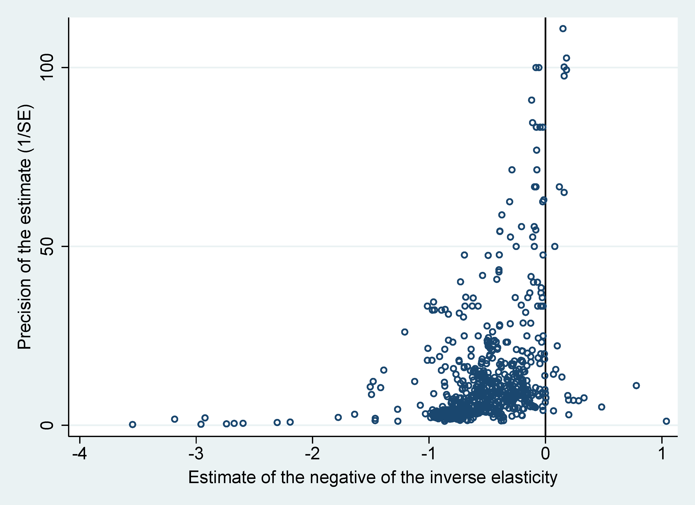

Abstract
A key parameter in the analysis of wage inequality is the elasticity of substitution between skilled and unskilled labor. We show that the empirical literature is consistent with both publication and attenuation bias in the estimated inverse elasticities. Publication bias, which exaggerates the mean reported inverse elasticity, dominates and results in corrected inverse elasticities closer to zero than the typically published estimates. The implied mean elasticity is 4, with a lower bound of 2. Elasticities are smaller for developing countries. To derive these results, we use nonlinear tests for publication bias and model averaging techniques that account for model uncertainty.
Fig: The funnel plot suggests publication bias in the literature
Reference: Tomas Havranek, Zuzana Irsova, Lubica Laslopova, and Olesia Zeynalova (2024), "Publication and Attenuation Biases in Measuring Skill Substitution." Review of Economics and Statistics 106 (5), 1187-1200.